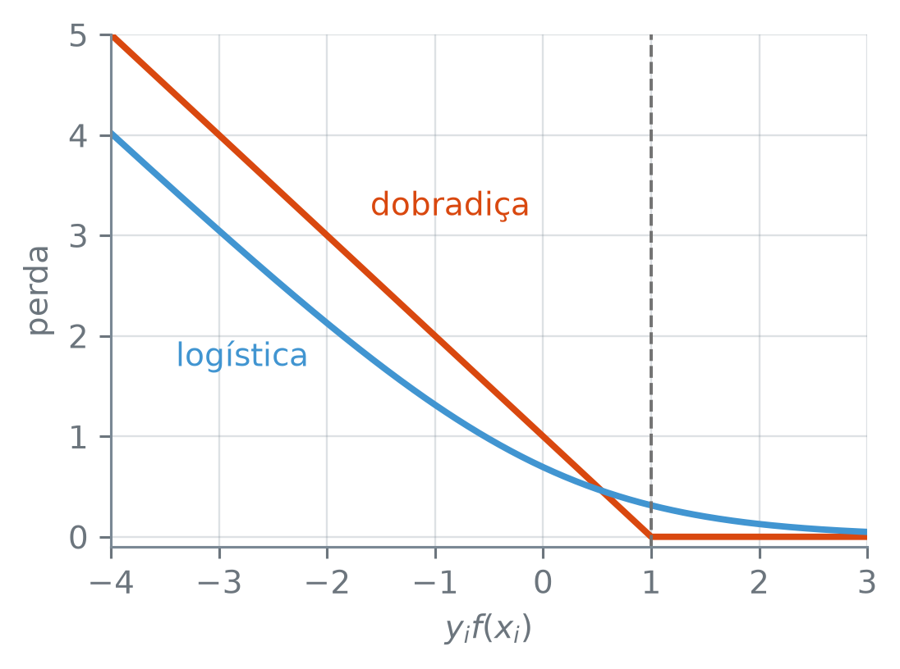

numero_br = lambda v, casas=2: (
f"{v:,.{casas}f}"
.replace(",", "_")
.replace(".", ",")
.replace("_", ".")
.replace("-", "−")
)O Classificador de Vetores de Suporte
Nota
Esta seção corresponde às seções 9.2, 9.5 e 9.6.1 de James et al. (2023).
Quando as duas nuvens de pontos se misturam, nenhuma reta deixa todas as observações de uma classe de um lado e todas as da outra do outro. E, mesmo quando uma reta separa, ela pode depender de poucos pontos: um ponto novo perto da fronteira basta para girá-la. Vale aceitar alguns pontos de treino do lado errado em troca de uma fronteira que não dependa tanto de poucos deles? E quantos aceitar?
Para imprimir com vírgula decimal:
Os pontos são os mesmos 40 sorteios da seção 16.1, com a classe \(1\) deslocada de 1 nas duas coordenadas, o que mistura as nuvens. Depois deles, o mesmo gerador sorteia 10.000 pontos de teste, 5.000 de cada classe, com o mesmo deslocamento (o _ em 10_000 só separa os milhares para quem lê):
import numpy as np
rng = np.random.default_rng(16)
X = rng.normal(size=(40, 2))
y = np.repeat([-1, 1], 20)
X_mis = X.copy()
X_mis[y == 1] += 1
X_teste = rng.normal(
size=(10_000, 2))
y_teste = np.repeat(
[-1, 1], 5_000)
X_teste[y_teste == 1] += 1
print("treino:", X_mis.shape)
print("teste:", X_teste.shape)treino: (40, 2)
teste: (10000, 2)Uma margem que aceita violações
O classificador de margem máxima pede que todo ponto de treino fique do lado certo da margem. Afrouxar essa exigência dá o classificador de vetores de suporte: cada ponto ganha uma variável de folga, que mede quanto ele invade a margem, e a soma dessas folgas tem um teto. Essa folga é de cada ponto, e não a folga entre as projeções das duas classes da seção 16.1.
O classificador de vetores de suporte escolhe \(\beta_0, \dots, \beta_p\), as folgas \(\varepsilon_1, \dots, \varepsilon_n\) e a margem \(M\) que resolvem
\[ \begin{aligned} &\text{maximizar}\ M \\ &\text{sujeito a}\ \sum_{j=1}^{p} \beta_j^2 = 1, \\ &y_i\, f(x_i) \ge M(1 - \varepsilon_i), \\ &\varepsilon_i \ge 0,\ \ \sum_{i=1}^{n} \varepsilon_i \le C. \end{aligned} \]
A folga \(\varepsilon_i\) diz onde o ponto \(i\) ficou:
- \(\varepsilon_i = 0\): do lado certo da margem, sobre a borda ou além dela;
- \(0 < \varepsilon_i < 1\): dentro da margem, mas do lado certo do hiperplano;
- \(\varepsilon_i = 1\): sobre o hiperplano;
- \(\varepsilon_i > 1\): do lado errado do hiperplano, um erro de treino.
O número \(C \ge 0\) é um orçamento: o total de folga que as \(n\) observações podem gastar. Cada ponto do lado errado do hiperplano gasta mais de 1, então no máximo \(C\) pontos ficam do lado errado. Com \(C = 0\), nenhuma folga é permitida e o problema volta a ser o da margem máxima.
Na escala em que o SVC guarda os coeficientes, a da seção 16.1, a borda da margem é \(y_i f(x_i) = 1\) e a restrição com \(M\) vira \(y_i f(x_i) \ge 1 - \varepsilon_i\). A folga de cada ponto é então \(\varepsilon_i = \max(0,\ 1 - y_i f(x_i))\): zero para quem está sobre a borda ou além dela, e \(1 - y_i f(x_i)\) para os outros.
AvisoO
C do SVC vai no sentido oposto
O SVC tem um argumento chamado C, mas ele não é o orçamento \(C\): vai no sentido contrário. Um C pequeno no SVC dá uma margem larga, com muita folga gasta; um C grande dá uma margem estreita, com pouca folga. Daqui em diante, C em fonte de código é sempre o argumento do SVC, e \(C\), em itálico, o orçamento.
O SVC com C=1, o valor padrão do argumento, e o \(y_i f(x_i)\) e a folga de cada um dos 40 pontos. Aqui as duas coordenadas estão na mesma escala; com preditores em unidades diferentes, a margem e as folgas dependeriam da unidade, e o StandardScaler entra antes do SVC num Pipeline, ajustado só no treino (seção 10.6):
from sklearn.svm import SVC
modelo = SVC(kernel="linear", C=1)
modelo.fit(X_mis, y)
yf = y * modelo.decision_function(
X_mis)
eps = np.maximum(0, 1 - yf)
print("maior folga:",
numero_br(eps.max()))maior folga: 2,30np.maximum(0, 1 - yf)— compara, elemento a elemento, 0 com \(1 - y_i f(x_i)\) e fica com o maior: a folga de cada ponto.
Em termos de \(y_i f(x_i)\), as quatro faixas da folga são \(y_i f(x_i) \ge 1\), entre 0 e 1, igual a 0 e menor que 0. O SVC resolve o problema só até uma tolerância de 0,001, o padrão do argumento tol, e por isso o código testa primeiro, com essa folga, quem está sobre a borda (\(y_i f(x_i)\) perto de 1) e sobre o hiperplano (perto de 0):
sobre = np.isclose(yf, 1,
atol=1e-3)
no_hip = np.isclose(yf, 0,
atol=1e-3)
nomes = ["sobre a borda",
"no hiperplano", "além",
"dentro", "lado errado"]
faixa = np.select(
[sobre, no_hip, yf > 1,
yf > 0],
nomes[:4], nomes[4])
for nome in nomes:
n = (faixa == nome).sum()
print(nome + ":", n)
dentro = faixa == "dentro"
errado = faixa == "lado errado"
erros = (modelo.predict(X_mis)
!= y).sum()
print("erros de treino:", erros)
print("erros = lado errado:",
erros == errado.sum())sobre a borda: 3
no hiperplano: 0
além: 18
dentro: 10
lado errado: 9
erros de treino: 9
erros = lado errado: Truenp.select(condicoes, nomes, padrao)— para cada ponto, o nome da primeira condição da lista que éTrue, epadraoquando nenhuma é: aqui, quem tem \(y_i f(x_i)\) negativo. A ordem decide: um ponto sobre a borda temyf > 0também, mas cai em"sobre a borda", que vem antes; eyf > 0só pega quem não passou de 1.nomes[:4]— os quatro primeiros nomes da lista;nomes[4], o quinto, é o padrão.faixa == "dentro"—Trueonde a faixa do ponto é"dentro".
Na figura, a reta contínua é o hiperplano e as tracejadas são as bordas da margem. Os pontos sem anel estão além da tracejada do seu lado. O anel roxo marca quem está sobre a tracejada ou entre ela e a reta contínua; o verde, quem passou da reta contínua para a região da outra classe:
import matplotlib.pyplot as plt
def classes(ax, pts, y):
a = pts[y == -1]
b = pts[y == 1]
ax.scatter(a[:, 0], a[:, 1],
color="C0", s=18,
label="classe −1")
ax.scatter(b[:, 0], b[:, 1],
color="C1", s=24,
marker="^",
label="classe 1")
ax.set_aspect("equal")
def regioes(ax, modelo):
g = np.linspace(-3, 4, 141)
g1, g2 = np.meshgrid(g, g)
malha = np.column_stack(
[g1.ravel(), g2.ravel()])
z = modelo.decision_function(
malha).reshape(g1.shape)
lim = np.abs(z).max() + 1
ax.contourf(g1, g2, z,
levels=[-lim, 0, lim],
colors=["C0", "C1"],
alpha=0.2)
estilos = ["--", "-", "--"]
ax.contour(g1, g2, z,
levels=[-1, 0, 1],
colors="0.45",
linewidths=1.5,
linestyles=estilos)
def anel(ax, pts, cor, rotulo,
tam=90, lw=1.5):
ax.scatter(pts[:, 0],
pts[:, 1], s=tam,
facecolors="none",
edgecolors=cor,
linewidths=lw,
label=rotulo)
fig, ax = plt.subplots(
figsize=(3.8, 4.8),
layout="constrained")
regioes(ax, modelo)
classes(ax, X_mis, y)
na_margem = sobre | dentro
anel(ax, X_mis[na_margem], "C3",
"sobre a borda ou dentro")
anel(ax, X_mis[errado],
"C2", "lado errado")
ax.set_xlim(-2.5, 3.5)
ax.set_ylim(-2.5, 3.5)
ax.set_xticks([-2, 0, 2])
ax.set_yticks([-2, 0, 2])
ax.set_xlabel("$X_1$")
ax.set_ylabel("$X_2$")
fig.legend(ncols=2,
loc="outside lower center")
plt.show()![Gráfico de dispersão com eixos X1 e X2 de −2,5 a 3,5, com marcas em −2, 0 e 2, fundo dividido por uma reta cinza que desce da esquerda para a direita: azul claro embaixo à esquerda, laranja claro em cima à direita. Duas retas tracejadas paralelas formam uma faixa larga em volta da reta. Círculos azuis e triângulos laranja se misturam perto da faixa; muitos pontos dentro dela têm anel roxo, e alguns círculos azuis na região laranja e triângulos laranja na região azul têm anel verde. A legenda fica embaixo.](02-o-classificador-de-vetores-de-suporte_files/figure-html/fig-folgas-output-1.png)
C=1 nos 40 pontos misturados. A reta cinza contínua é o hiperplano, e as tracejadas, as bordas da margem. Anéis roxos: os pontos sobre a borda (\(\varepsilon_i = 0\)) ou dentro da margem (\(0 < \varepsilon_i < 1\)). Anéis verdes: os 9 pontos do lado errado do hiperplano, com \(\varepsilon_i > 1\), os erros de treino.
a | b—Trueonde ao menos um dos dois éTrue:na_margemmarca os pontos sobre a borda ou dentro da margem.
classes desenha os pontos das duas classes; regioes pinta o lado de cada classe e traça o hiperplano e as bordas da margem; anel desenha anéis vazios numa cor e num tamanho escolhidos.
Dos 40 pontos, 18 ficam além da margem e 3 sobre a borda, todos com folga zero; 10 invadem a margem sem cruzar o hiperplano; nenhum fica sobre o hiperplano; e 9 estão do lado errado dele, com \(\varepsilon_i > 1\). São exatamente os 9 erros de treino. A faixa entre as tracejadas, vazia na margem máxima, agora tem pontos dentro, e os de anel verde estão na região da outra classe.
Na margem máxima, os vetores de suporte eram os pontos sobre a borda. E agora, quais pontos definem o hiperplano? Um palpite pela figura antes da saída:
sv = modelo.support_
print("vetores de suporte:",
len(sv))
print("n_support_:",
modelo.n_support_)
com_anel = sobre | dentro | errado
mesmos = set(sv) == set(
np.flatnonzero(com_anel))
print("= pontos com anel:",
mesmos)vetores de suporte: 22
n_support_: [11 11]
= pontos com anel: Truenp.flatnonzero(m)— as posições em que a máscaraméTrue.
Os 22 vetores de suporte, 11 de cada classe, são exatamente os \(3 + 10 + 9\) pontos com anel: os que estão sobre a borda, dentro da margem ou do lado errado do hiperplano. Todo ponto com folga positiva é vetor de suporte.
O que o C do SVC faz
O código ajusta o SVC com sete valores de C, de 0,01 a 10, e mede, em cada um, a margem \(M\), o número de vetores de suporte e a soma das folgas, isto é, quanto do orçamento \(C\) a solução gastou. Antes de ler a tabela, um palpite: quando o C do SVC cresce, a margem alarga ou estreita? E os vetores de suporte, aumentam ou diminuem?
import pandas as pd
def resumo(c):
m = SVC(kernel="linear", C=c)
m.fit(X_mis, y)
f_c = m.decision_function(
X_mis)
yf_c = y * f_c
norma = np.linalg.norm(
m.coef_[0])
folgas = np.maximum(
0, 1 - yf_c)
return {"c_svc": c,
"margem": 1 / norma,
"n_vs": len(m.support_),
"soma_folgas":
folgas.sum()}
grade = [0.01, 0.03, 0.1, 0.3,
1, 3, 10]
tabela = pd.DataFrame(
[resumo(c) for c in grade])
tabela.style.format(
{"c_svc": "{:g}",
"margem": "{:.2f}",
"soma_folgas": "{:.2f}"},
decimal=",").hide()| c_svc | margem | n_vs | soma_folgas |
|---|---|---|---|
| 0,01 | 3,14 | 40 | 29,87 |
| 0,03 | 1,86 | 34 | 24,40 |
| 0,1 | 1,18 | 29 | 20,77 |
| 0,3 | 0,87 | 25 | 19,02 |
| 1 | 0,76 | 22 | 18,55 |
| 3 | 0,72 | 21 | 18,46 |
| 10 | 0,72 | 21 | 18,46 |
pd.DataFrame([...])— uma tabela com uma linha por dicionário da lista e uma coluna por chave:c_svcé oCdoSVC,margemé \(M\),n_vsé o número de vetores de suporte, esoma_folgasé \(\sum_i \varepsilon_i\).tabela.style.format({...}, decimal=",")— formata a exibição sem mudar os valores: cada coluna com o seu formato ("{:.2f}", duas casas;"{:g}", sem zeros sobrando) e vírgula decimal..hide()— esconde a coluna do índice.
Quando o C do SVC cresce, a margem estreita, de 3,14 para 0,72, os vetores de suporte caem de 40 para 21 e a soma das folgas cai de 29,87 para 18,46. O código confere que nenhuma das três colunas cresce de uma linha para a seguinte, a menos da tolerância de 0,001 do SVC, e compara a última linha com um C dez vezes maior, 100:
for col in ["margem", "n_vs",
"soma_folgas"]:
passos = np.diff(tabela[col])
ok = np.all(passos <= 1e-3)
print(col, "não cresce:", ok)
u10 = tabela.iloc[6, 1:]
u100 = pd.Series(
resumo(100)).iloc[1:]
u3 = tabela.iloc[5, 1:]
for nome, u in [("C = 3", u3),
("C = 100", u100)]:
igual = np.allclose(
u.astype(float),
u10.astype(float),
atol=1e-3)
print(nome, "igual a C = 10:",
igual)margem não cresce: True
n_vs não cresce: True
soma_folgas não cresce: True
C = 3 igual a C = 10: True
C = 100 igual a C = 10: Truenp.diff(v)— as diferenças entre elementos vizinhos:v[1] - v[0],v[2] - v[1], e assim por diante.tabela.iloc[6, 1:]— a linha na posição 6 (C= 10), da segunda coluna em diante, semc_svc.pd.Series(dicionario)— o dicionário deresumo(100)como uma série, com as chaves como rótulos..astype(float)— converte os valores para número de ponto flutuante, para onp.allclosecomparar.
As três colunas andam juntas, e a soma das folgas mostra o sentido invertido do aviso: o C do SVC cresce, e o orçamento que a solução gasta encolhe. Com C = 3, 10 e 100, a margem, os vetores de suporte e a soma das folgas coincidem, e de 1 para 3 a solução ainda muda: os vetores de suporte passam de 22 para 21. Nestes 40 pontos, nos valores medidos, a partir de C = 3 apertar o orçamento não muda mais a solução. Isso é destes dados; em outros, o ponto em que a solução para de mudar é outro.
Quatro valores de C da grade, um por painel:
fig, eixos = plt.subplots(2, 2,
figsize=(3.8, 4.2),
sharex=True, sharey=True,
layout="constrained")
for c, ax in zip(
[0.03, 0.1, 0.3, 1],
eixos.ravel()):
m = SVC(kernel="linear", C=c)
m.fit(X_mis, y)
regioes(ax, m)
classes(ax, X_mis, y)
anel(ax, m.support_vectors_,
"C3", None, tam=40, lw=1)
ax.set_xlim(-2.5, 3.5)
ax.set_ylim(-2.5, 3.5)
ax.set_xticks([-2, 0, 2])
ax.set_yticks([-2, 0, 2])
vs = len(m.support_)
rot = numero_br(c, 2).rstrip(
"0").rstrip(",")
ax.set_title(
f"C = {rot} · VS = {vs}",
fontsize=9)
fig.supxlabel("$X_1$")
fig.supylabel("$X_2$")
plt.show()![Quatro painéis em grade de dois por dois, com os mesmos círculos azuis e triângulos laranja misturados, eixos X1 e X2 de −2,5 a 3,5, com marcas em −2, 0 e 2. Em cada um, uma reta cinza desce da esquerda para a direita entre duas retas tracejadas paralelas. No painel de cima à esquerda, C = 0,03, as tracejadas ficam longe da reta, quase nos cantos, e 34 pontos têm anel roxo; no de cima à direita, C = 0,1, a faixa é um pouco mais estreita, com 29 anéis; embaixo à esquerda, C = 0,3, mais estreita, com 25; embaixo à direita, C = 1, a mais estreita, com 22.](02-o-classificador-de-vetores-de-suporte_files/figure-html/fig-quatro-c-output-1.png)
C do SVC, que cresce da esquerda para a direita e de cima para baixo. A reta cinza contínua é o hiperplano, e as tracejadas, as bordas da margem; os anéis roxos marcam os vetores de suporte. No título de cada painel, o C do SVC e VS, o número de vetores de suporte. Com C maior, a margem estreita e sobram menos vetores de suporte.
plt.subplots(2, 2, sharex=True, sharey=True)— quatro gráficos em duas linhas e duas colunas, com os mesmos limites de eixo;eixos.ravel()os põe numa fila, na ordem de leitura.ax.set_title(texto, fontsize=9)— o título do painel, em fonte menor.fig.supxlabelefig.supylabel— um rótulo só para os eixos de todos os painéis.
A largura da margem regula o equilíbrio entre viés e variância (seção 7.6). Com a margem larga, de C pequeno no SVC, muitos pontos a violam: todos eles ajudam a decidir o hiperplano, e um ponto a mais ou a menos pesa pouco. É um classificador de variância baixa, que pode ter viés alto. Com a margem estreita, de C grande, menos pontos decidem a fronteira, e o classificador se ajusta mais aos dados de treino.
Por que o sentido é o oposto
O sentido invertido sai de uma outra forma do mesmo problema, com o formato que a regressão ridge (seção 11.3) já tinha: uma perda, que mede quanto o modelo erra no treino, mais uma penalidade, que encolhe os coeficientes. Nela, o classificador de vetores de suporte escolhe \(\beta_0, \dots, \beta_p\) sem a restrição \(\sum_j \beta_j^2 = 1\) e sem \(M\):
\[ \begin{aligned} &\underset{\beta_0, \dots, \beta_p}{\text{minimizar}} \\ &\sum_{i=1}^{n} \max[0,\ 1 - y_i f(x_i)] \\ &+ \lambda \sum_{j=1}^{p} \beta_j^2. \end{aligned} \]
A perda é a soma das folgas, e a penalidade é a da ridge. Com \(\lambda\) grande, encolher os coeficientes vale mais que reduzir as folgas: os coeficientes saem pequenos, a margem \(1/\lVert\beta\rVert\) sai larga, e a soma das folgas cresce. O SVC minimiza
\[ \begin{aligned} &\tfrac{1}{2} \sum_{j=1}^{p} \beta_j^2 \\ &+ \texttt{C} \sum_{i=1}^{n} \max[0,\ 1 - y_i f(x_i)]. \end{aligned} \]
Dividir tudo por C não muda onde fica o mínimo, e dá a forma anterior com \(\lambda = 1/(2\,\texttt{C})\): o C do SVC está no denominador. Com C=0.1, por exemplo, o \(\lambda\) correspondente é \(1/(2 \cdot 0{,}1) = 5\).
Dá para conferir a conta. Se ela está certa, nenhuma combinação de coeficientes perto da solução do SVC dá um valor menor na forma com \(\lambda = 5\). O código mexe um pouco nos três coeficientes, 1.000 vezes ao acaso, e conta quantas dessas variações dão um valor menor. Para contraste, faz o mesmo com \(\lambda = 10\), o valor que sairia esquecendo o \(\tfrac12\). O scikit-learn não calcula o valor da forma com \(\lambda\), e a função objetivo existe só para essa conferência. m.intercept_[0] e m.coef_[0] estão na escala do SVC, sem dividir pela norma, que é a escala em que as duas formas acima estão escritas:
m = SVC(kernel="linear", C=0.1)
m.fit(X_mis, y)
b0 = m.intercept_[0]
b = m.coef_[0]
def objetivo(b0, b, lam):
f = b0 + X_mis @ b
folga = np.maximum(
0, 1 - y * f)
return (folga.sum()
+ lam * (b**2).sum())
viz = np.random.default_rng(160)
d = viz.normal(scale=0.05,
size=(1000, 3))
for lam in [5, 10]:
base = objetivo(b0, b, lam)
menores = sum(
objetivo(b0 + e[0],
b + e[1:], lam) < base
for e in d)
print(f"λ = {lam}: vizinhos",
"menores:", menores)λ = 5: vizinhos menores: 0
λ = 10: vizinhos menores: 345viz.normal(scale=0.05, size=(1000, 3))— 1.000 linhas de 3 sorteios da normal com média 0 e desvio padrão 0,05, de um gerador com semente própria, 160, diferente da dos dados.
Com \(\lambda = 5\), nenhum dos 1.000 vizinhos fica abaixo da solução do SVC; com \(\lambda = 10\), 345 ficam, e a mesma solução deixa de ser o mínimo. A correspondência completa, lida nos dois sentidos:
Nota
Um C grande no SVC é um \(\lambda = 1/(2\,\texttt{C})\) pequeno, que é um orçamento \(C\) pequeno.
| orçamento \(C\) | C do SVC |
|
|---|---|---|
| margem larga | grande | pequeno |
| margem estreita | pequeno | grande |
| nenhuma violação | \(C = 0\) | C=np.inf |
A última linha é a da seção 16.1: o orçamento zero corresponde a C=np.inf, e só tem solução quando as classes se separam. O zero no argumento do SVC não é aceito:
try:
SVC(kernel="linear",
C=0).fit(X_mis, y)
except ValueError as erro:
msg = str(erro)
for k in range(0, 90, 30):
print(msg[k:k + 30])The 'C' parameter of SVC must
be a float in the range (0.0,
inf]. Got 0 instead.A mensagem diz que C precisa estar no intervalo \((0, \infty]\): C=np.inf é aceito, C=0 não.
Só os vetores de suporte contam
Na seção 16.1, empurrar para longe do hiperplano um ponto que não era vetor de suporte não mudava a solução. Vale o mesmo com folgas? E se o ponto empurrado for um vetor de suporte? O código pega o ponto mais afastado da margem entre os 18 que não são vetores de suporte e o vetor de suporte de maior folga, o que está mais fundo do lado errado. Cada um é empurrado 2 unidades na direção da sua classe, perpendicular ao hiperplano, e o ajuste é refeito. Antes de ler a saída, um palpite: qual dos dois muda o hiperplano?
norma = np.linalg.norm(
modelo.coef_[0])
direcao = modelo.coef_[0] / norma
fora = np.setdiff1d(
np.arange(40), sv)
i = fora[np.argmax(yf[fora])]
j = sv[np.argmax(eps[sv])]
print("não é VS:", i, "· VS:", j)
print(f"folga de {j}:",
numero_br(eps[j]))
def empurra(k):
X_mov = X_mis.copy()
X_mov[k] += 2 * y[k] * direcao
m = SVC(kernel="linear", C=1)
return m.fit(X_mov, y), X_mov
m_i, _ = empurra(i)
iguais = (
np.allclose(m_i.coef_,
modelo.coef_, atol=1e-3)
and np.allclose(
m_i.intercept_,
modelo.intercept_,
atol=1e-3))
print(f"igual, movendo {i}:",
iguais)
antes = modelo.coef_[0]
print("coef_ antes:",
numero_br(antes[0]), ";",
numero_br(antes[1]))
m_j, X_j = empurra(j)
depois = m_j.coef_[0]
print("coef_ depois:",
numero_br(depois[0]), ";",
numero_br(depois[1]))
f_j = m_j.decision_function(
X_j[[j]])[0]
yf_j = y[j] * f_j
print("y f de", j, "depois:",
numero_br(yf_j))
print(j, "ainda é VS:",
j in m_j.support_)não é VS: 17 · VS: 26
folga de 26: 2,30
igual, movendo 17: True
coef_ antes: 1,12 ; 0,67
coef_ depois: 1,23 ; 0,74
y f de 26 depois: 1,35
26 ainda é VS: Falsenp.setdiff1d(a, b)— os elementos deaque não estão emb: as posições dos pontos que não são vetores de suporte.fora[np.argmax(yf[fora])]— entre esses, o de maior \(y_i f(x_i)\), o mais afastado da margem;sv[np.argmax(eps[sv])], entre os vetores de suporte, o de maior folga.return m.fit(X_mov, y), X_mov— devolve dois valores, o modelo ajustado e os pontos movidos;m_i, _ = ...guarda o primeiro e descarta o segundo no_.X_j[[j]]— a linhajcomo uma tabela de uma linha, o formato que odecision_functionespera.
O ponto 17, que não é vetor de suporte, sai do lugar sem mudar os coeficientes nem o intercepto. O ponto 26, um vetor de suporte com folga 2,30, empurrado as mesmas 2 unidades na direção da sua classe, atravessa o hiperplano e sai da margem: no ajuste novo, o seu \(y_i f(x_i)\) é 1,35, e ele deixa de ser vetor de suporte. Os coeficientes mudam de \((1{,}12;\ 0{,}67)\) para \((1{,}23;\ 0{,}74)\).
A análise discriminante linear da seção 9.4 se comporta de outro jeito: a fronteira dela depende das médias das classes e da covariância, calculadas com todos os pontos de treino, inclusive os que estão muito longe dela. O classificador de vetores de suporte ignora os pontos que estão folgadamente do lado certo da margem.
Escolhendo C por validação cruzada
O C é um parâmetro de ajuste como o \(\lambda\) da ridge, e a escolha segue o mesmo caminho: validação cruzada numa grade de valores (seção 10.5). A grade é a mesma de antes, e o critério é a taxa de erro média nos 5 grupos:
from sklearn.model_selection \
import GridSearchCV
from sklearn.model_selection \
import StratifiedKFold
grupos = StratifiedKFold(5,
shuffle=True, random_state=16)
busca = GridSearchCV(
SVC(kernel="linear"),
{"C": grade}, cv=grupos)
busca.fit(X_mis, y)
r = busca.cv_results_
erro_cv = 1 - r["mean_test_score"]
def rot(c):
return f"{c:g}".replace(
".", ",")
print("pontos por grupo:",
len(X_mis) // 5)
print("C: erro de val. cruzada")
for c, e in zip(grade, erro_cv):
print(rot(c) + ":",
numero_br(e, 3))
c_best = busca.best_params_["C"]
print("escolhido:", rot(c_best))
previsto = busca.predict(X_teste)
teste = (previsto
!= y_teste).mean()
print("erro de teste:",
numero_br(teste, 4))pontos por grupo: 8
C: erro de val. cruzada
0,01: 0,175
0,03: 0,275
0,1: 0,250
0,3: 0,250
1: 0,225
3: 0,250
10: 0,250
escolhido: 0,01
erro de teste: 0,2317StratifiedKFold(n_splits, shuffle, random_state)— divide as linhas emn_splitsgrupos com a mesma proporção de classes do conjunto todo;shuffle=Trueembaralha antes, com a sementerandom_state.GridSearchCV(estimador, grade, cv), desklearn.model_selection— ajusta o estimador com cada valor da grade, um dicionário com o nome do argumento e a lista de valores, e mede a taxa de acerto por validação cruzada nos grupos decv. No fim, reajusta com todas as linhas o valor de maior acerto médio;busca.predictusa esse ajuste.busca.cv_results_— um dicionário com os resultados;r["mean_test_score"]é o acerto médio nos grupos, na ordem da grade, e1 -o transforma em taxa de erro.busca.best_params_— o valor escolhido, num dicionário.
A validação cruzada escolhe C = 0,01, a margem mais larga da grade, com erro de validação cruzada 0,175, e a taxa de erro de teste desse ajuste é 0,2317. O valor está na ponta da grade, e isso levanta uma dúvida: um C ainda menor faria melhor? O código olha o ajuste com C = 0,01 e o compara com C = 0,001:
from sklearn.model_selection \
import cross_val_score
m01 = SVC(kernel="linear", C=0.01)
m01.fit(X_mis, y)
print("vetores de suporte:",
len(m01.support_))
pesos = np.abs(m01.dual_coef_)
print("todos com peso C:",
np.allclose(pesos, 0.01))
m001 = SVC(kernel="linear",
C=0.001).fit(X_mis, y)
def reta(m):
v = np.r_[m.intercept_,
m.coef_[0]]
return v / np.linalg.norm(
m.coef_[0])
print("C = 0,001, mesma reta:",
np.allclose(reta(m01),
reta(m001)))
acerto = cross_val_score(
SVC(kernel="linear", C=0.001),
X_mis, y, cv=grupos)
e001 = 1 - acerto.mean()
print("val. cruzada, C = 0,001:",
numero_br(e001, 3))vetores de suporte: 40
todos com peso C: True
C = 0,001, mesma reta: True
val. cruzada, C = 0,001: 0,175m.dual_coef_— o peso de cada vetor de suporte na solução, com o sinal da classe. Em valor absoluto, fica entre 0 e oCdoSVC.cross_val_score(estimador, X, y, cv), desklearn.model_selection— a taxa de acerto em cada um dos grupos decv; com os mesmosgruposda busca, o erro médio é comparável ao da tabela acima.reta(m)— junta o intercepto e os coeficientes num vetor só e o divide pela norma de \((\beta_1, \beta_2)\), a escala de \(\sum_j \beta_j^2 = 1\) da seção 16.1: a mesma reta dá o mesmo vetor, qualquer que seja a escala do ajuste.
Com C = 0,01, os 40 pontos são vetores de suporte, e todos com o mesmo peso, o maior permitido. O orçamento é tão folgado que todo ponto entra na decisão por igual, e diminuir o C para 0,001 dá a mesma reta. Com os mesmos grupos, o erro de validação cruzada de C = 0,001 é 0,175, igual ao de 0,01: estender a grade para baixo criaria um empate, e o GridSearchCV, que fica com o primeiro valor da grade entre os empatados, trocaria só o valor de C, não o classificador escolhido.
Estes dados foram simulados, e por isso a regra de menor taxa de erro esperada é conhecida: o classificador de Bayes da seção 7.7. As duas classes são normais com o mesmo espalhamento, têm o mesmo tamanho, e a classe \(1\) foi deslocada de 1 nas duas coordenadas; com isso, a fronteira de Bayes é a reta \(X_1 + X_2 = 1\). Nos mesmos pontos de teste, ela erra:
lado = X_teste.sum(axis=1) > 1
regra = np.where(lado, 1, -1)
bayes = (regra != y_teste).mean()
print("regra X1 + X2 > 1:",
numero_br(bayes, 4))regra X1 + X2 > 1: 0,2304np.where(cond, 1, -1)— 1 ondecondéTrue, e −1 onde éFalse.
Nestes pontos, a regra de Bayes erra 0,2304, e o SVC escolhido, 0,2317: a diferença, de 0,0013, é pequena. Mas a escolha de C não é firme. Com outra semente no embaralhamento dos grupos, a validação cruzada pode escolher outro valor. O código repete a busca com as sementes de 0 a 19 e mede o erro de teste de cada C da grade:
escolhas = []
for s in range(20):
g = StratifiedKFold(5,
shuffle=True,
random_state=s)
b = GridSearchCV(
SVC(kernel="linear"),
{"C": grade}, cv=g)
b.fit(X_mis, y)
escolhas.append(
b.best_params_["C"])
conta = pd.Series(escolhas)
print("C: vezes escolhido")
for c, n in (conta.value_counts()
.sort_index().items()):
print(rot(c) + ":", n)
erros_t = []
for c in grade:
m = SVC(kernel="linear", C=c)
m.fit(X_mis, y)
p = m.predict(X_teste)
erros_t.append(
(p != y_teste).mean())
erros_t = np.array(erros_t)
entre = np.all((erros_t > 0.23)
& (erros_t < 0.26))
print("teste entre 0,23 e 0,26:",
entre)C: vezes escolhido
0,01: 10
0,03: 2
0,1: 3
0,3: 2
3: 2
10: 1
teste entre 0,23 e 0,26: Truepd.Series(escolhas).value_counts()— quantas vezes cada valor aparece;.sort_index()ordena pelos valores deC, e.items()percorre os pares (valor, contagem).a & b—Trueonde os dois sãoTrue:entreconfere que todo erro de teste está acima de 0,23 e abaixo de 0,26.
As 20 sementes escolhem 6 valores diferentes de C, de 0,01 a 10. Nestes dados, nenhum C da grade é muito pior que outro: o erro de teste de todos fica entre 0,23 e 0,26. A curva de validação cruzada, ao contrário, é ruidosa: com 8 pontos por grupo, um erro a mais num grupo soma \(1/8\) ao erro dele e \(1/40 = 0{,}025\) à média dos 5. Com 40 pontos de treino, pequenas mudanças nos grupos trocam o vencedor.
A perda dobradiça e a regressão logística
Na forma com \(\lambda\), a perda do classificador de vetores de suporte é a soma de \(\max[0,\ 1 - y_i f(x_i)]\), a perda dobradiça (hinge loss): uma linha que desce em reta até \(y_i f(x_i) = 1\) e daí em diante é zero, com uma dobra no 1. Na ridge, a perda é a soma dos quadrados dos resíduos.
A regressão logística da seção 9.2 também pode ser escrita com uma perda. Com as classes em \(-1\) e \(1\), a perda de cada ponto é \(\log(1 + e^{-y_i f(x_i)})\). As duas perdas, calculadas em quatro valores de \(y_i f(x_i)\):
z = np.array([-2, 0, 1, 3])
dobra = np.maximum(0, 1 - z)
logis = np.log1p(np.exp(-z))
print("yf: dobradiça · logística")
for a, b1, b2 in zip(z, dobra,
logis):
print(numero_br(a, 0), ":",
numero_br(b1, 0), "·",
numero_br(b2, 4))yf: dobradiça · logística
−2 : 3 · 2,1269
0 : 1 · 0,6931
1 : 0 · 0,3133
3 : 0 · 0,0486np.exp(-z)— \(e^{-z}\), elemento a elemento.np.log1p(v)— \(\log(1 + v)\), o logaritmo natural.
Em \(y_i f(x_i) = 1\) e em 3, a perda dobradiça é zero, e a logística, 0,3133 e 0,0486: pequena, mas não zero. O gráfico das duas:
zz = np.linspace(-4, 3, 281)
fig, ax = plt.subplots(
figsize=(3.8, 2.8),
layout="constrained")
ax.plot(zz,
np.maximum(0, 1 - zz),
color="C1", lw=2)
ax.plot(zz,
np.log1p(np.exp(-zz)),
color="C0", lw=2)
ax.axvline(1, color="0.45",
ls="--", lw=1)
ax.text(-1.6, 3.2, "dobradiça",
color="C1")
ax.text(-3.4, 1.7, "logística",
color="C0")
ax.set_xlabel("$y_i f(x_i)$")
ax.set_ylabel("perda")
ax.set_xlim(-4, 3)
ax.set_ylim(-0.1, 5)
plt.show()
ax.plot(x, y, color, lw)— uma linha pelos pontos, com a cor e a espessuralw.ax.axvline(1, ...)— uma linha vertical em \(x = 1\).ax.text(x, y, texto, color)— escreve o texto na posição \((x, y)\), nas coordenadas dos dados.
As duas curvas têm a mesma forma geral: grandes para pontos do lado errado, perto de zero para os bem classificados. A diferença está no zero exato. Com a perda dobradiça, um ponto além da margem não contribui em nada, e é por isso que só os vetores de suporte decidem o hiperplano. Com a logística, todo ponto contribui um pouco. A mesma ideia de ignorar os pontos bem resolvidos vale para respostas quantitativas: a regressão por vetores de suporte, o SVR do scikit-learn, usa uma perda que é zero quando o resíduo, em valor absoluto, fica abaixo de uma tolerância, e cresce só com os resíduos maiores que ela.
Com perdas parecidas, os dois métodos costumam dar fronteiras parecidas, mesmo com a penalidade do SVC com C=1, \(\lambda = 1/(2 \cdot 1) = 0{,}5\), e nenhuma na logística. O código ajusta a regressão logística sem penalidade aos mesmos 40 pontos e compara as previsões de teste com as do SVC com C=1:
from sklearn.linear_model import (
LogisticRegression)
logit = LogisticRegression(
C=np.inf,
solver="newton-cholesky",
tol=1e-8)
logit.fit(X_mis, y)
p_log = logit.predict(X_teste)
p_svc = modelo.predict(X_teste)
e_log = (p_log != y_teste).mean()
e_svc = (p_svc != y_teste).mean()
print("teste, logística:",
numero_br(e_log, 4))
print("teste, SVC:",
numero_br(e_svc, 4))
conc = (p_log == p_svc).mean()
print("mesma classe:",
numero_br(conc, 4))
print("β0; β1; β2 (Σβj² = 1):")
for nome, m in [
("logística", logit),
("SVC", modelo)]:
v = reta(m)
print(nome,
numero_br(v[0], 3), ";",
numero_br(v[1], 3), ";",
numero_br(v[2], 3))teste, logística: 0,2403
teste, SVC: 0,2391
mesma classe: 0,9796
β0; β1; β2 (Σβj² = 1):
logística −0,933 ; 0,823 ; 0,569
SVC −0,874 ; 0,858 ; 0,514LogisticRegression(C=np.inf, solver="newton-cholesky", tol=1e-8), desklearn.linear_model— a regressão logística sem penalidade (C=np.inf), resolvida pelo método de Newton com tolerância pequena (tol=1e-8), que chega ao mesmo ponto em máquinas diferentes.
As duas fronteiras dão a mesma classe a 0,9796 dos pontos de teste, e os erros de teste, 0,2403 na logística e 0,2391 no SVC, diferem em 0,0012. Na escala de \(\sum_j \beta_j^2 = 1\), os coeficientes das duas retas ficam próximos, sem coincidir.
O LinearSVC
O scikit-learn tem um segundo classificador por hiperplano, o LinearSVC. O nome sugere o mesmo SVC com kernel="linear", mas o padrão dele resolve outro problema: a perda é o quadrado da dobradiça, e o intercepto entra na penalidade, junto com os coeficientes. Com loss="hinge", a perda passa a ser a dobradiça, mas o intercepto continua penalizado:
from sklearn.svm import LinearSVC
def mostra(nome, m):
b0 = m.intercept_[0]
b = m.coef_[0]
print(nome)
print(" β0:", numero_br(b0),
"· β:", numero_br(b[0]),
";", numero_br(b[1]))
padrao = LinearSVC(C=1)
padrao.fit(X_mis, y)
dobradica = LinearSVC(C=1,
loss="hinge", random_state=16)
dobradica.fit(X_mis, y)
mostra("SVC linear", modelo)
for nome, m in [
("LinearSVC", padrao),
("hinge", dobradica)]:
mostra(nome, m)
p = m.predict(X_teste)
igual = (p == p_svc).mean()
print(" mesma classe:",
numero_br(igual, 4))SVC linear
β0: −1,15 · β: 1,12 ; 0,67
LinearSVC
β0: −0,62 · β: 0,57 ; 0,39
mesma classe: 0,9828
hinge
β0: −1,06 · β: 1,08 ; 0,65
mesma classe: 0,9892LinearSVC(C, loss, random_state), desklearn.svm— um classificador por hiperplano com outro algoritmo de ajuste. O padrão,loss="squared_hinge", usa o quadrado da perda dobradiça;loss="hinge", a própria dobradiça. O intercepto é penalizado nos dois casos. Comloss="hinge", o algoritmo percorre as observações numa ordem sorteada, erandom_statefixa esse sorteio.
Os coeficientes saem outros: \((0{,}57;\ 0{,}39)\) no padrão e \((1{,}08;\ 0{,}65)\) com a dobradiça, contra \((1{,}12;\ 0{,}67)\) do SVC. As previsões de teste concordam com as do SVC em 0,9828 e 0,9892 dos pontos. Para ler a margem, as folgas e os vetores de suporte como nesta seção, o estimador é o SVC com kernel="linear".
Quantos pontos aceitar
Vale aceitar pontos de treino do lado errado, e quantos? Não há um número fixo: o orçamento é um parâmetro de ajuste, escolhido por validação cruzada como o \(\lambda\) da ridge. Nestes 40 pontos, a validação cruzada escolheu a margem mais larga da grade, em que todos os pontos são vetores de suporte, mas sem firmeza: em 10 das 20 divisões dos grupos, o escolhido foi C = 0,01, e nas outras 10, outro valor; e o erro de teste de todo C da grade ficou entre 0,23 e 0,26. O orçamento limita quantos pontos ficam do lado errado, no máximo \(C\), mas não fixa esse número: é o ajuste que decide quantos cruzam o hiperplano. Em troca dos pontos do lado errado, a fronteira passa a depender de muitos pontos, e não de poucos.
James, Gareth, Daniela Witten, Trevor Hastie, Robert Tibshirani, e Jonathan Taylor. 2023. An Introduction to Statistical Learning with Applications in Python. Springer.